Why This Matters
🗓️ Deadlines are final
If you miss open enrollment, you wait until next year to enroll unless you have a qualifying life event (QLE). FSA funds also have their own use-by and claim deadlines (Section 4).
👪 Dependents need your enrollment
You must enroll yourself before you can add dependent coverage. Dependents cannot be enrolled on their own.
📄 Waiving other coverage takes paperwork
If you waive because you're covered under a parent's or spouse's plan, Rippling asks you to upload documentation to finish the waiver.
💳 Pre-tax money has IRS rules
FSA and commuter funds come out of your paycheck before taxes. You can't withdraw cash from a commuter account.
🚫 One Healthcare FSA
Choose the Healthcare FSA or decline it. The Dependent Care FSA and the Commuter FSA are separate accounts.
🔒 Changes wait for the next window
Once you confirm, you can still change your election while the open enrollment window is open. After that, changes generally wait for a QLE, and new hire changes go through your admin.
⚠️ Key rule: Finish before your deadline. Finishing after your coverage start date still works if you're within the deadline, but a missed deadline does not reopen.
Benefits Enrollment: Open Enrollment or New Hire
Medical, dental, vision, and life coverage all run through the same enrollment task. Steps run in order, and each one shows what happens next.
Walkthrough of My Benefits enrollment, steps 1 through 7 below.
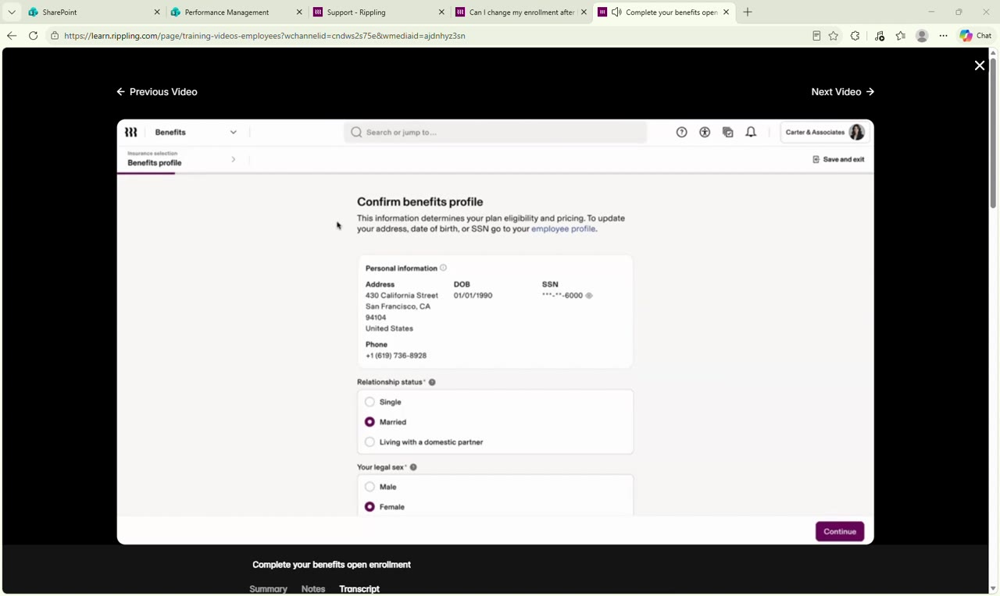
Check address, date of birth, SSN, phone, relationship status, and legal sex.
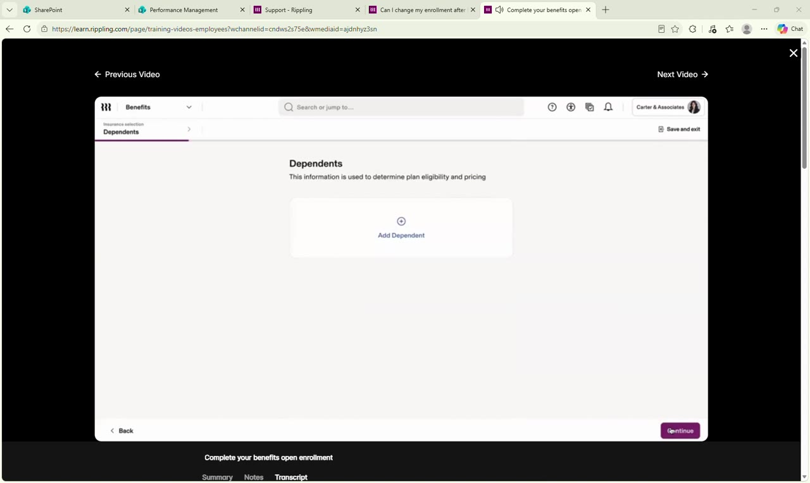
Add a spouse, domestic partner, or child with the required details. You must enroll yourself first.
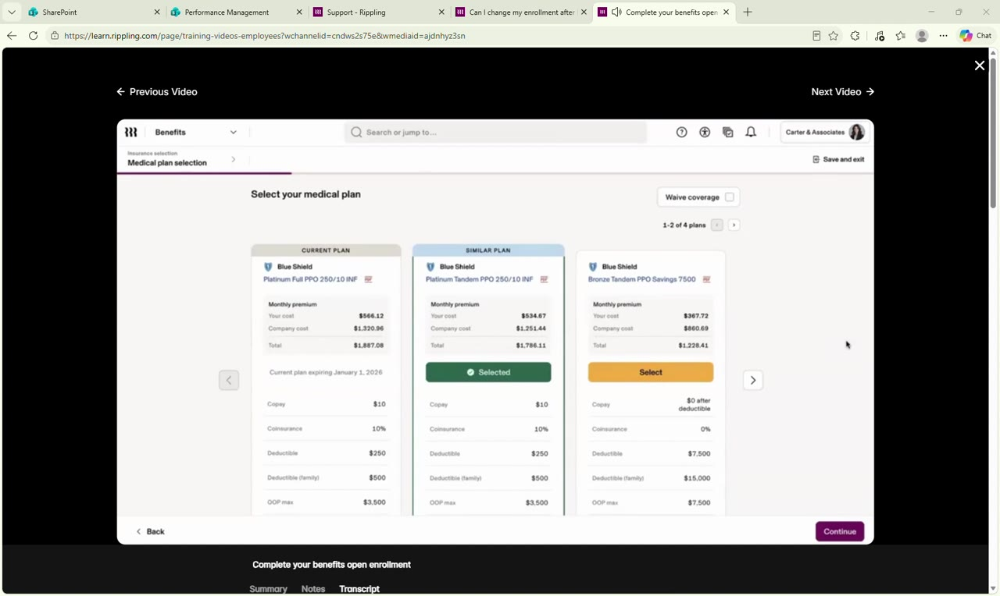
Click Select under a plan, or click Waive coverage. Open a plan's Summary of Benefits and Coverage (SBC) from its name or PDF icon.
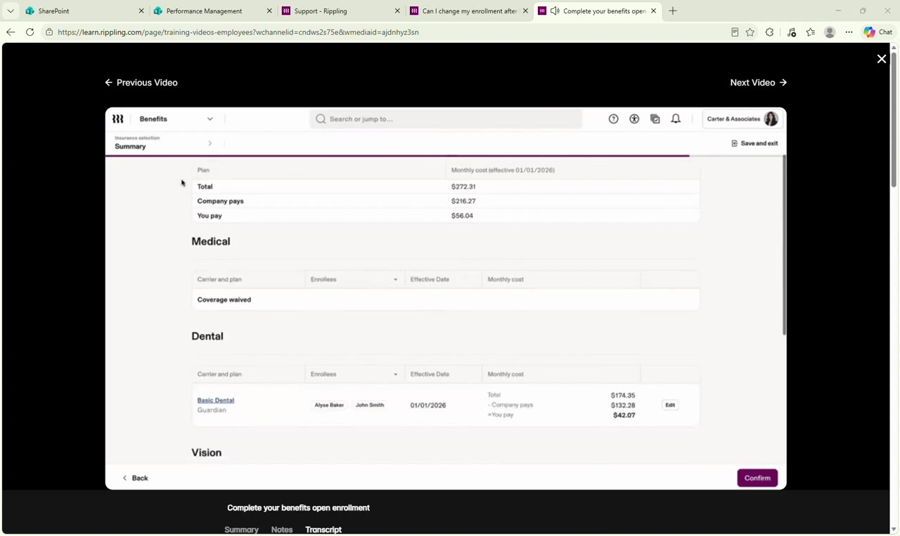
Check the enrollee profile and the summary. The summary shows your monthly cost and its take-home impact. Click Confirm.
- Confirm your benefits profile. Relationship status is Single, Married, or Living with a domestic partner.
- Enter dependents. You cannot enroll dependents unless you enroll too.
- Select your plans. To leave a dependent off, uncheck their name.
- Add life insurance beneficiaries (only if you chose Basic or Voluntary Life). Select Add Beneficiary, or Skip and return later.
- Complete the enrollee profile. Answer any carrier questions, such as Medicare coverage. Select Continue.
- Review and confirm. Select Edit to change the profile, then select Confirm.
- Sign any documents. Sign plan descriptions or waivers if Rippling asks.
- You're all set! 🎉 Nice work finishing open enrollment. Your elections are locked in for the plan year, and you can review them any time in My Benefits.
A waiver stands until open enrollment or a QLE. If you waive because you have other coverage, upload the documentation Rippling asks for, or the waiver doesn't finish.
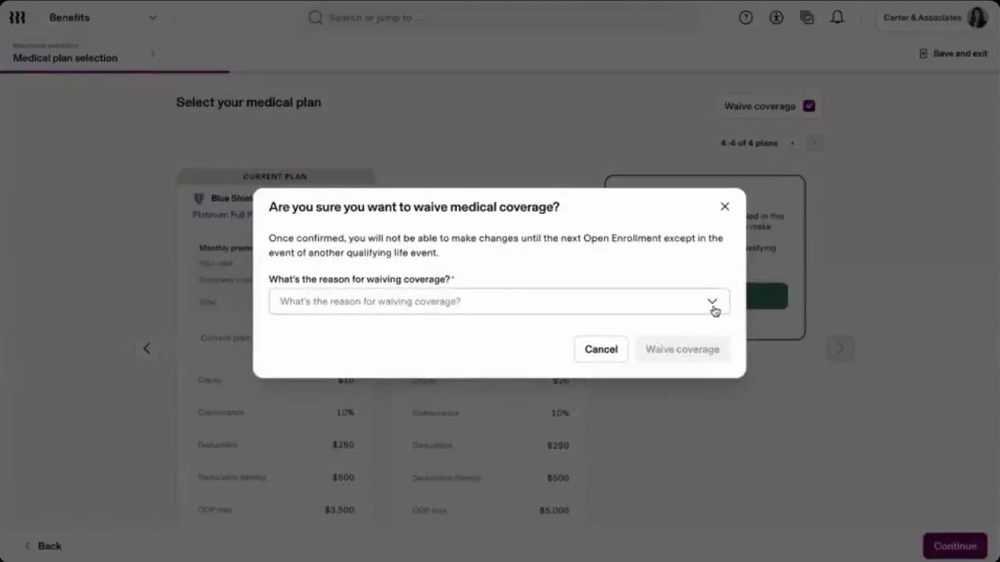
The confirmation pop-up that appears when you select Waive coverage.
- You can reset and change your elections while the open enrollment window is still open. See Section 7.
- Finishing after the effective date keeps your coverage start date. It does not move it.
- View a summary of your election results in the Benefits app at any time after you select coverages.
- Your benefits carrier sends instructions for accessing your ID cards after enrollment.
Make your elections based on your situation at the time you enroll, such as marriage, the birth of a child, or a move. After the event happens, submit a QLE in Rippling. It applies the coverage changes at that time.
Healthcare FSA & Dependent Care FSA
ITDP offers a Healthcare FSA, a Dependent Care FSA, and a Commuter FSA (CommuteEase) for parking and transit. Commuter details are in Section 5. You must enroll each year to participate.
Covers the Healthcare FSA choice, contribution entry, and the Dependent Care question.
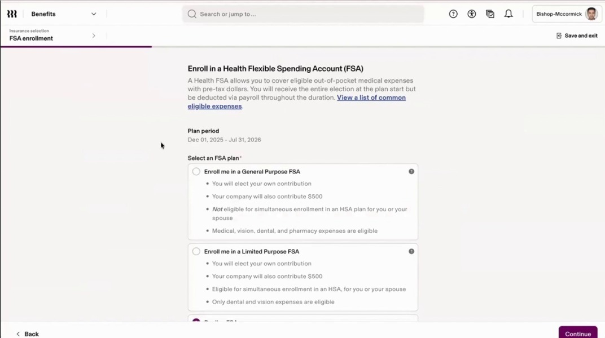
Example FSA choice screen from the recording. Your enrollment screen may show different options.
| Option | Covers | Notes |
|---|---|---|
| Dependent Care FSA (DCFSA) | Care for a dependent child under 13, such as babysitters, nursery schools, pre-schools, and daycare centers, or a household member who cannot care for themselves | Up to $7,500 per family ($3,750 if you file separately). Enroll only with eligible dependent care expenses. Full list: IRS Publication 503. |
| Commuter FSA (CommuteEase) | Transit: train, bus, subway, ferry, or vanpool. Parking: at or near your workplace, or a location you use to commute by carpool. | Up to $340 a month for transit and up to $340 a month for parking. Transit and parking funds are kept apart. See Section 5. |
| Commuter FSA (CommuteEase) | Parking and transit | A separate account from your Healthcare FSA. Parking and transit funds are kept apart. See Section 5. |
| Account | Incur expenses by | Submit claims by | Unused funds |
|---|---|---|---|
| Healthcare FSA | November 30, 2027 | January 31, 2028 | Up to $680 carries over to the following year. Carryover doesn't count against your annual contribution. Unused funds above $680 are not returned. |
| Dependent Care FSA | November 30, 2027 | January 31, 2028 | Unused funds are not returned or carried over to the following year. |
- Open the FSA task from your Rippling Inbox. If medical or dental is in the same task, complete those first.
- Choose Healthcare FSA or Decline FSA.
- Enter your contribution per plan period. Review the company contribution, total, estimated deduction per pay period, last day to incur expenses, and rollover amount.
- Answer the Dependent Care FSA question if your company offers it. Choose Enroll or Decline. If you enroll, enter an amount and check the box confirming you're within the IRS annual limit.
- Confirm. Your FSA account can take 6 to 24 hours to appear in the FSA app.
Read the last day to incur expenses and the rollover amount on the FSA screen before you confirm. Those dates decide when unspent money stops being usable.
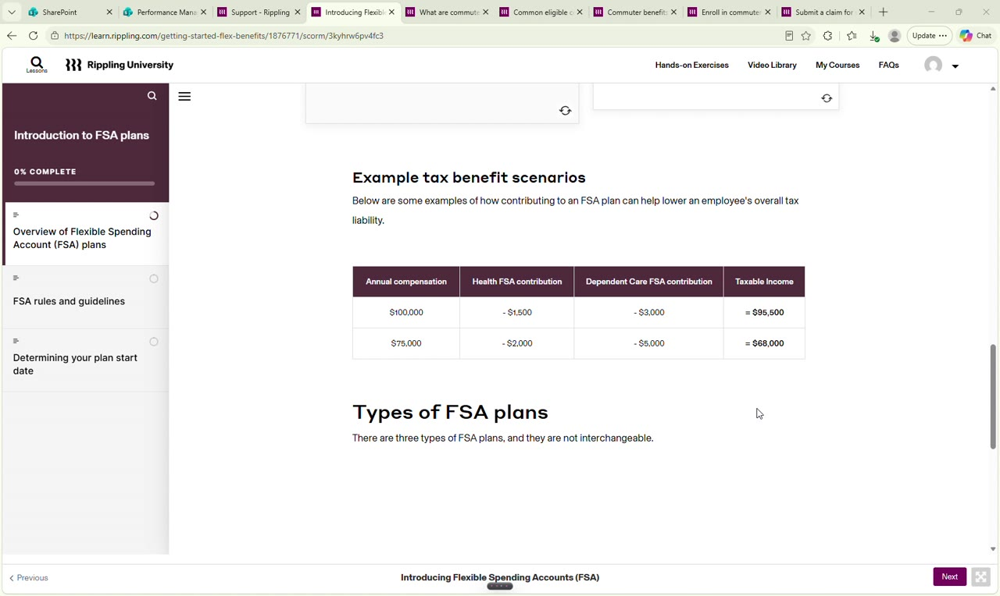
The training module's breakdown of the three FSA plan types.
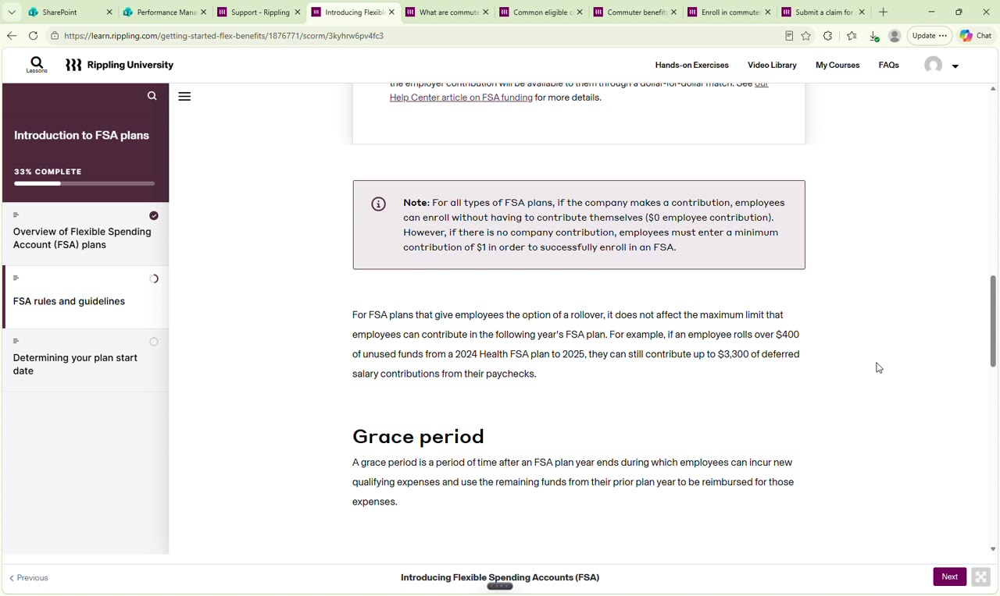
The training module's explanation of grace periods.
⏳ Grace period
A period after the plan year ends when you can still incur new eligible expenses and use remaining prior-year funds. Not every plan has one.
📤 Runout period
The time after the plan year ends to submit claims for expenses from that year. For the 2026-2027 plan year, claims are due by January 31, 2028.
⚠️ Financial risk
Funds you don't use for eligible expenses can be forfeited at the end of the plan year or grace period, depending on your employer's plan design.
The company owns FSA funds, and they're paid out only when an eligible transaction occurs. After you leave, you can't get FSA reimbursements for newly incurred medical expenses.
If your Flex card wasn't accepted for an eligible expense, pay out of pocket and submit a claim. Once it's approved, you're reimbursed for the amount you paid.
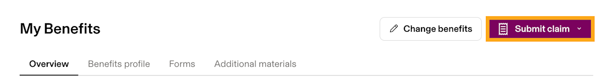
Select Submit claim at the top right of the Overview tab.
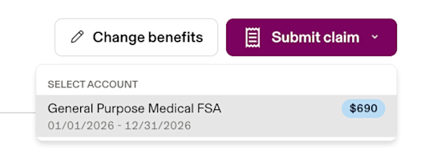
Choose the account the expense belongs to, such as the Healthcare or Dependent Care FSA.
- Open My Benefits. From the main sidebar, select Benefits, then My Benefits.
- Select Submit claim in the Overview tab, then choose your account: Healthcare FSA, Dependent Care FSA, or Commuter FSA (CommuteEase).
- Upload your receipt. Rippling scans image or PDF receipts and fills in the fields. Edit anything it gets wrong. Blank fields need manual entry.
- Submit the claim, then check its status in My Benefits › FSA › Transactions.
| Rule | What it means |
|---|---|
| Bank account first | Submit claim stays disabled until you add a personal bank account for reimbursement in the flex benefits Settings tab. |
| One transaction per claim | Several receipts can support one claim, but each claim covers one transaction. Separate transactions need separate claims. |
| Date of service | The receipt must show the date of service or date range. Selecting entries in the claim isn't enough. If the date is missing, add the Rippling Flex claim form. |
| Rippling Flex claim form | The self-attest form covers the person the expense was for, the merchant, the service dates, a description, the account type, the amount, and a merchant signature or stamp. If the receipt has no merchant name, add a stamp or signature, or attach an itemized receipt or letterhead from the merchant. |
| Processing | Elevate, Rippling's infrastructure partner, processes claims in 2 to 5 business days. Approved claims pay to your bank account, and the same amount comes off your FSA balance. |
| After you submit | You can't edit a submitted claim or cancel it yourself. A denied claim for missing or incorrect documents can be resubmitted with the added documents. Pending claims need Rippling Support. |
| Claim deadline | Claims for the 2026-2027 plan year are due by January 31, 2028. Submit 4 to 5 days early so there's time to fix a denied claim. |
| Dependent Care FSA amounts | Claim the full receipt if the expense falls in the plan year. You're reimbursed up to your current balance, and the rest pays out as contributions arrive. |
Mail a check payable to Elevate HCS, PO Box 875050, Kansas City, MO 64187-5050. Include a short explanation, and put the claim number in the memo line. Denied claims need no repayment.
- Submit a qualifying life event (QLE) in My Benefits. Rippling then creates an FSA task in your Inbox. You have 30 days from the QLE date.
- A change in job or status alone doesn't open an FSA window. Admins can't submit a QLE for you.
- Changes are allowed until the plan starts. After that, only a QLE allows changes.
One Rippling Flex card works for FSA and commuter purchases. Dependents can have their own cards on FSA accounts only.
| Topic | What to know |
|---|---|
| Getting your card | Mailed in a plain envelope to the home address on your profile within 10 business days after enrollment. Rippling doesn't provide tracking. |
| Activating | Activate in your Rippling account, or call the number on the front of the card. If the phone system tells you to contact your provider, check the 16-digit card number, the ZIP code on your profile, and your date of birth in MMYY format. |
| Card number and balance | In My Benefits, open FSA or Commuter from Current benefits. The Overview tab shows the last four digits and your available balance. The full number appears only on the physical card. |
| PIN | Set or reset it by calling 877-315-3483 and selecting Option 2. Rippling doesn't store PINs. At a terminal that asks for a PIN, select credit, or use BYPASS if the merchant offers it. |
| Where it works | Purchases in the US, Canada, and Mexico. Transactions in other countries are declined, so pay out of pocket and claim when you return. |
| Locked card | Rippling's partner can lock the card after unusual activity. If every charge is yours, select the three dots on the My card tab and choose Unlock card. If a charge looks unfamiliar, order a replacement and stop using the card. |
| Disputes | Dispute an unrecognized transaction within 60 days of the transaction date using the Card Dispute Form. |
| Lost or stolen | Order a replacement in My Benefits. Select FSA or Commuter, then My card, then Order replacement card. Your old card is deactivated at no cost. A new card arrives within 5 to 7 business days. 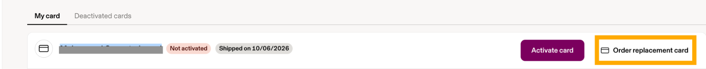 Order a replacement from the My card tab. |
| Dependent cards | In My Benefits, select FSA, then Add dependent. Enter their name, date of birth, and SSN. If they have no SSN, the article says to enter 123-45-6789. Dependent cards aren't available for commuter. |
| Pending and submitted | Pending means the card was authorized. If the merchant doesn't finalize, the charge is voided. Submitted means the merchant authorized the charge but hasn't settled it. Many post within 24 hours, and some take up to 72. |
Commuter Benefits (Transit & Parking)
There is no enrollment window for commuter benefits. You can sign up or change your amounts any time, but changes follow a monthly cutoff. You can contribute up to $340 a month for transit and up to $340 a month for parking.
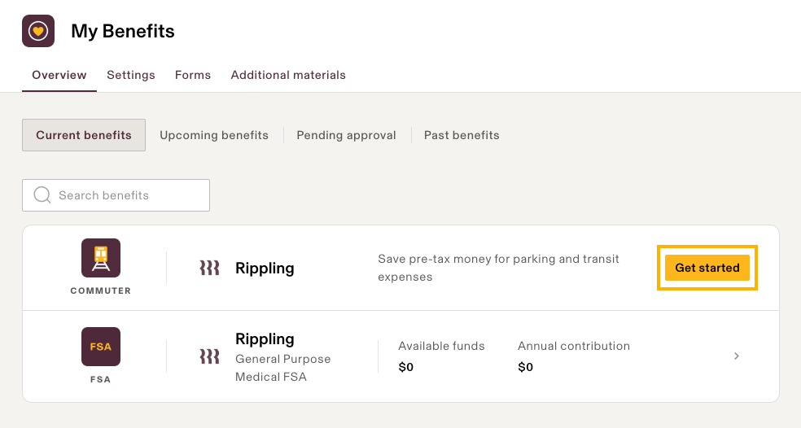
Scroll to Commuter in Current benefits and select Get started.
- Log in to your Rippling account and go to Benefits from your home screen.
- Select Commuter Benefits. It is sometimes listed under Flex Benefits.
- Enter your monthly Transit amount and your monthly Parking amount, up to $340 each.
- Save your changes. The updated deduction routes to your next scheduled payroll. Any amount above the IRS pre-tax limit is deducted after tax.
Current plan year: December 1, 2025 to November 30, 2026. The ITDP guide doesn't list commuter deadlines for 2026-2027, so confirm them with HR.
| Account | Incur expenses by | Submit claims by | Rollover |
|---|---|---|---|
| Parking | November 30, 2026, except for amounts eligible for rollover | February 28, 2027 | Unused funds roll over month to month and year to year while you remain an active employee. No maximum. |
| Transit | November 30, 2026, except for amounts eligible for rollover | No run-out time | Unused funds roll over month to month and year to year while you remain an active employee. No maximum. |
| Transit | Parking |
|---|---|
| Eligible: bus, ferry, subway, train, and vanpool (vanpool conditions apply) | Eligible: paid parking lots, parking meters, and parking garages at or near your workplace, or at a transit facility you use to commute |
| Not eligible: rideshare services such as Uber and Lyft, and bike share programs such as BayWheels | Not eligible: tolls, gas, car maintenance, and parking unrelated to work |
- A vanpool qualifies only if it seats at least seven people including the driver, at least 80% of its mileage carries employees commuting, and commuting trips fill it to at least 50% of its seats.
- Long Island Rail Road and Metro-North fares qualify.
- Funds cover only your own commute. Card transactions or claims for a dependent's commute are declined.
- Open My Benefits, then the Commuter section.
- On the Overview tab, select Change contribution next to the Transit or Parking account.
- Save your change. The Commuter section updates with the correct effective date.
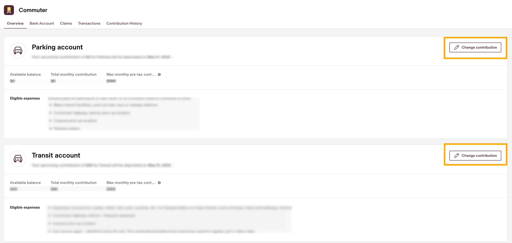
The Change contribution buttons sit next to the Parking and Transit accounts.
| You make the change | It takes effect |
|---|---|
| On or before the 25th (example: September 20) | The 1st of the next month (October 1) |
| After the 25th (example: September 26) | The 1st of the month after next (November 1) |
Funds
Funds load on the first business day of each month. They're available by 6 AM Pacific and visible by 10 AM Pacific.
Employer contribution
If your company adds money, you can split it between Transit and Parking. To receive the full employer amount, your total election must equal or exceed it. Funds can't move between accounts once deposited.
| Company contribution | Your total monthly election | Employer funds received | Your contribution | Allocation example |
|---|---|---|---|---|
| $100 | $100 | $100 | $0 | $60 Transit / $40 Parking |
| $100 | $50 | $50 | $0 | $30 Transit / $20 Parking |
| $100 | $120 | $100 | $20 | $60 Transit / $60 Parking |
You pay your own money only when your total election is higher than the company contribution.
- Pay with your Flex card at the point of sale for eligible transit or parking.
- Or pay out of pocket and submit a claim with the receipt. Follow the claim steps in Section 4, and choose your Parking or Transit account.
Update a Dependent's Information
Name, date of birth, and SSN changes can be made any time. Adding or removing a dependent from coverage follows a different rule, covered after the steps below.
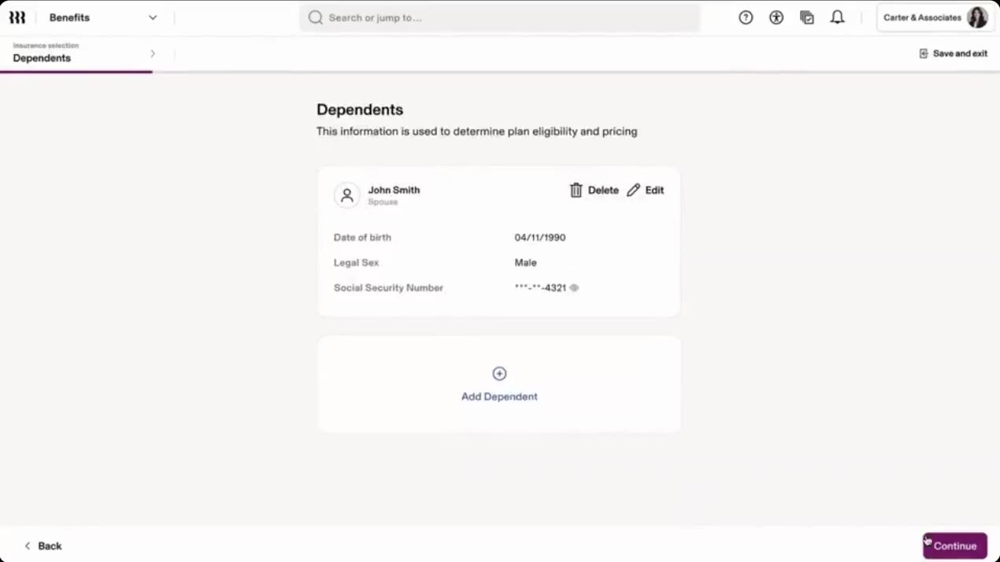
Your dependents list. Use Edit or Delete next to a dependent, or Add Dependent to add one.
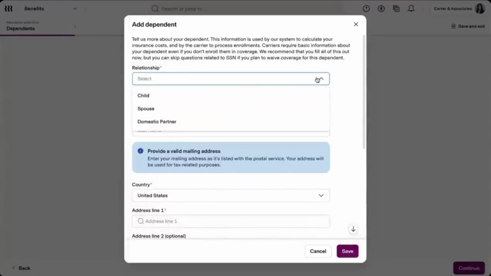
The Add dependent form. Choose the relationship, then enter the dependent's details.
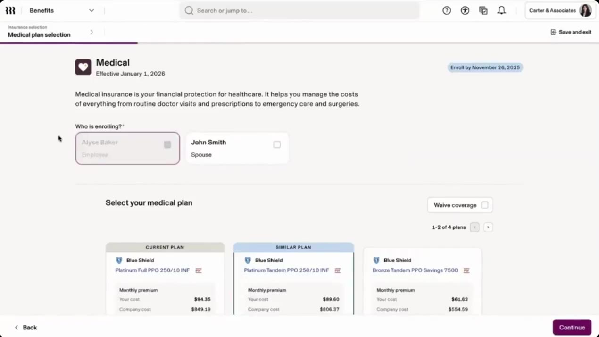
On the medical plan page, the Who is enrolling? checkboxes decide who is covered.
- Open your dependents. Benefits › My Benefits › Benefits profile › You and your Dependents.
- Select Edit next to the dependent's name.
- Make your changes and select Save.
- Select Confirm, review the changes, scroll down, sign, and select Continue.
- SSNs that start with 9 are not accepted.
- Tobacco use can change only during an active enrollment event.
- Adding or removing a dependent from coverage happens during open enrollment or after a QLE. Example: if a dependent gets coverage through their own employer, submit a QLE to drop them.
- If your company uses a third-party broker and a dependent changed directly with the carrier, your admin can record the change.
Change Your Election After You Submit
Once you submit, you can reset your enrollment and make changes as long as the open enrollment window is still open. Use the table to find the right path.
| Your situation | What to do |
|---|---|
| ✅ Open enrollment hasn't ended | Reset your enrollment yourself and make the change. Follow the steps in the help article "Make changes to your open enrollment elections." |
| 🔍 You can't see where to enroll | Select Benefits in the main sidebar. This opens My Benefits, where a notice at the top asks you to choose benefit plans. Select Enroll. |
| ⏳ You're past the open enrollment deadline | Ask your administrator. They can tell you whether there's still time to make changes. |
| 🆕 You're a new hire who submitted new hire choices | Ask your administrator to reopen them, if the enrollment deadline hasn't passed. Open enrollment elections you can reopen yourself. New hire enrollments must be reopened by an administrator. |
| 💍 A QLE has happened | Submit the QLE in Rippling within 30 days of the event. Admins can't submit it for you. |
Your administrator can also reset your enrollment on your behalf. Ask them if you can't complete the reset yourself. This is a second route to the same result, not a change to the deadline.
Mistakes That Cost Coverage
Most lost coverage comes from a short list of errors. Check this table before you confirm.
| Mistake | What to do instead |
|---|---|
| ❌ Adding dependents before enrolling yourself | Enroll yourself first. Dependents can't be enrolled without employee coverage. |
| 📄 Waiving because you have other coverage | Upload the documentation Rippling asks for. Without it, the waiver doesn't complete. |
| 🗓️ Missing an FSA deadline | Wait until next year unless you have a QLE. Submit the QLE in My Benefits and finish within 30 days. |
| 📅 Assuming Healthcare FSA money lasts past November 30, 2027 | Incur eligible expenses by November 30, 2027. Only up to $680 carries over. |
| 🧾 Assuming the Dependent Care FSA ends November 30 | The grace period runs through February 15, 2027, with claims due February 28, 2027. Unused funds are forfeited after that. |
| 🧮 Electing for a life event you expect | Elect based on your current situation. Submit the QLE after the event happens. |
| 👶 Using a Dependent Care FSA for a child's medical bills | Use the Dependent Care FSA only for care of a child under 13 or a household member who cannot care for themselves. Medical costs go through a Healthcare FSA. |
| 🧾 Enrolling in a Dependent Care FSA without eligible dependents | Enroll only when you have eligible dependents and eligible expenses. |
| ⏳ Waiting until after the deadline to ask about a change | Ask your admin while the window is open. After the deadline, they may not be able to help. |
| 🛡️ Skipping life insurance beneficiaries | Skipping is allowed, but add beneficiaries later in My Benefits. |
| 🚗 Claiming rideshare, tolls, gas, or car maintenance | These aren't eligible. Only transit fares and work-related parking qualify. |
| 🧒 Claiming a dependent's commute | Commuter funds cover only your own commute. Those transactions and claims are declined. |
| 🧾 Sending a receipt without a service date | Receipts must show the date of service or date range. If the date is missing, add the Rippling Flex claim form. |
| 🏦 Submitting a claim before adding a bank account | The Submit claim button stays disabled until a personal bank account is set up for reimbursement. |
| 🧮 Bundling several transactions into one claim | Each claim covers one transaction. File a separate claim for each. |
| 🗺️ Using the Flex card outside the US, Canada, or Mexico | Those charges are declined. Pay out of pocket and submit a claim when you return. |
| ⏱️ Filing claims at the last minute | Submit early enough to fix and resubmit a denied claim. See the claim rules in Section 4. |
Missed open enrollment and FSA deadlines are final until a QLE. Put your deadline on your calendar the day your Inbox task appears.
Quick Reference: Open Enrollment Terms
Terms used throughout this guide, in alphabetical order. Use your browser's search (Ctrl+F) to jump to one.
| Term | What it means |
|---|---|
| Admin (benefits admin) | Your company's benefits administrator. Sets open enrollment dates, resets elections, and reopens new hire enrollments. |
| Automated reminders | Emails and Inbox tasks sent two business days after the start date and two business days before the deadline. |
| Benefits profile | Your personal and dependent details used for enrollment. You can edit dependents under You and your Dependents. |
| Card dispute | A request to reverse an unrecognized Flex card transaction. File it within 60 days of the transaction date. |
| Carrier | The insurance company behind a medical, dental, vision, or life plan. |
| Claim deadline (run-out) | The last day to submit claims for expenses incurred in the plan year. |
| Claim substantiation | The receipt, or the self-attest form, that proves an expense was eligible. |
| Commuter (Parking and Transit) | Pre-tax monthly amounts for parking and transit. No enrollment window. Changes follow the 25th-of-the-month cutoff. |
| Commuter FSA (CommuteEase) | The commuter account for parking and transit. ITDP uses CommuteEase for it. |
| Contribution cutoff (the 25th) | Commuter changes made on or before the 25th start the 1st of the next month. Changes made after the 25th start the 1st of the month after next. |
| Contribution per plan period | The amount you elect to put into an FSA for the plan year. It's deducted from your paychecks. |
| Dependent | A spouse, domestic partner, or child you cover. You must enroll yourself before you can enter dependents. |
| Dependent Care FSA (DCFSA) | Pre-tax account for eligible dependent care: care for a child under 13, or a household member who cannot care for themselves. It can't pay for a child's medical expenses. |
| Effective date | The date your coverage or election starts. |
| Election | The plan, contribution, or option you choose during enrollment. |
| Elevate | Rippling's infrastructure partner. It processes FSA and commuter claims and reviews card activity. |
| Employer contribution | Money your company adds to an account. For commuter benefits, you can split it between Transit and Parking. |
| Enrollee profile | The carrier questions you answer during enrollment, such as whether you're enrolled in Medicare. |
| Flex card (Rippling Flex debit card) | The card that pays for FSA and commuter purchases. It ships about 10 days before your plan start date. |
| Grace period | Extra time after the plan year ends, if your plan offers one. Check your plan's rules. |
| Healthcare FSA | Pre-tax account for eligible health care costs, up to $3,400 a year. ITDP offers one Healthcare FSA. |
| Inbox task | The enrollment task in your Rippling Inbox. It links to the enrollment process and shows the due date. |
| Incur date (last day to incur expenses) | The last day an expense can happen and still use that plan year's funds. |
| IRS annual limit | The most you can contribute to an account in one year. Verify current figures before you elect. |
| My Benefits | The Rippling app where you view and change benefits. Reach it from Benefits in the main sidebar. |
| New hire enrollment | The enrollment you complete when you first join. The steps depend on your effective date. |
| Open enrollment (OE) | The annual window, set by your company, to choose benefits for the coming plan year. ITDP's window is November 2 to November 6, 2026. |
| Plan year | The 12-month period a plan covers. For the 2026-2027 FSA, that's December 1, 2026 to November 30, 2027. |
| QLE (qualifying life event) | A change such as marriage, the birth of a child, or a move. Submit it in My Benefits within 30 days to change coverage outside open enrollment. |
| Reimbursement claim | A request, with a receipt, to get money back from your FSA or commuter account after you paid out of pocket. |
| Repayment | Money you return to the plan for an ineligible or duplicate reimbursement, sent by check payable to Elevate HCS. |
| Reset enrollment | Reopening submitted elections to make changes while the open enrollment window is still open. |
| Rollover | Unused funds carried into the next plan year. The Healthcare FSA allows up to $680 for 2026-2027 under the ITDP guide. |
| Save and exit | Pauses enrollment. Reopen the same link to resume before the deadline. |
| Self-attest form (Rippling Flex claim form) | A form you complete and upload when a receipt is missing required details, such as the service dates or the merchant name. |
| Summary of Benefits and Coverage (SBC) | The plan document that lists coverage details. Open it from the plan's name or PDF icon. |
| Waive coverage | Declining a benefit line. The waiver stands until open enrollment or a QLE, and may require documentation. |
Still Need Help
- Rippling Support widget in My Benefits, for FSA and commuter account questions
- Rippling Help Center articles, for detailed benefits and FSA answers
- Your company's HR or benefits admin, for dates, deadlines, and QLE or reset questions
- Monica Bowser at HUB, for additional questions: Monica.Bowser@hubinternational.com or 301-279-6825
- Benefits website: My Benefits, which you can access any time for more information on benefit programs